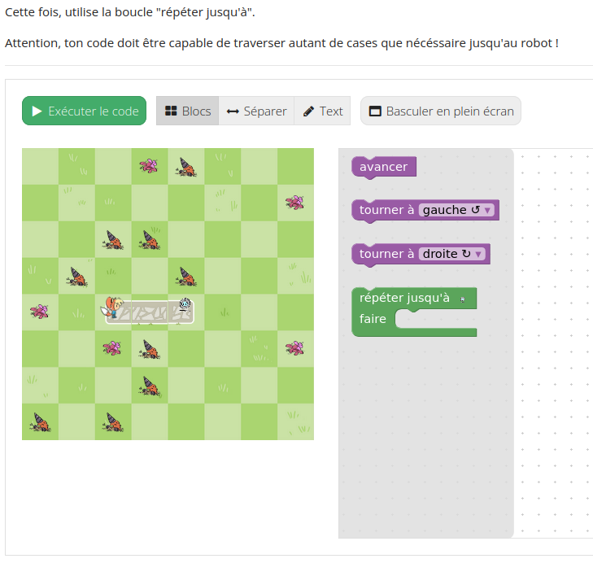
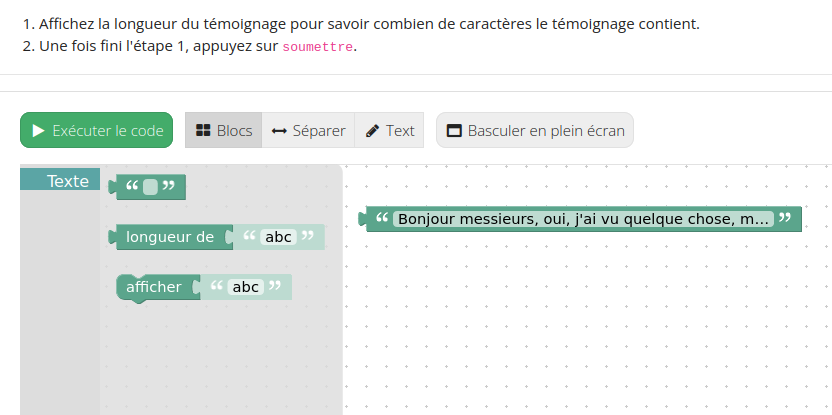

Bienvenue dans ce tutoriel pour Blockly sur INGInious !¶
Ce tutoriel vous guidera à travers les étapes nécessaires à la mise en place de votre propre cours Blockly. Il est divisé en deux parties :
- Les tâches de type labyrinthe (maze) :

- Tâches de type Blocs :

Nous vous recommandons de commencer par la tâche de type labyrinthe, car elle est plus facile à modifier selon vos besoins.
Dans ce tutoriel, vous apprendrez à connaître :
- L’interface d’INGInious - Ce que vous et vos élèves devrez savoir pour naviguer dans INGInious.
- Comment créer et modifier des tâches.
- Comment personnaliser votre propre cours.
Ce tutoriel est disponible en français et en anglais. Pour la version anglaise, veuillez cliquer ici : TODO add link
Labyrinthe
Informations génériques
Blocs
Blocs avancé
- Tutoriel Avancé - Bloc
- Création d’une tâche Blockly basique.
- Personnalisez votre tâche : comment créer la fonction somme (en utilisant l’interface graphique)
- Personnalisez votre tâche : créez la fonction somme à la main (en utilisant xml)
- Personnalisez votre tâche : une tâche uniquement “espace de travail”.
- Personnalisez votre tâche : comment créer un bloc personnalisé (if/else)